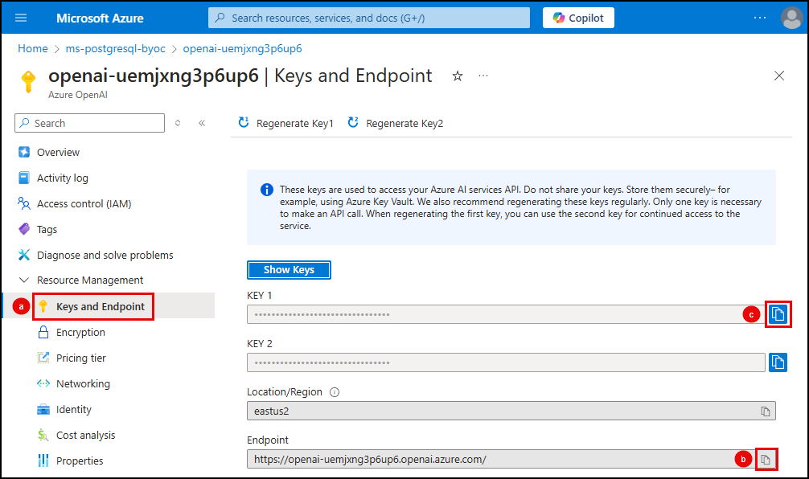
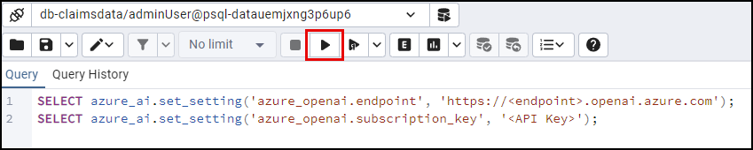
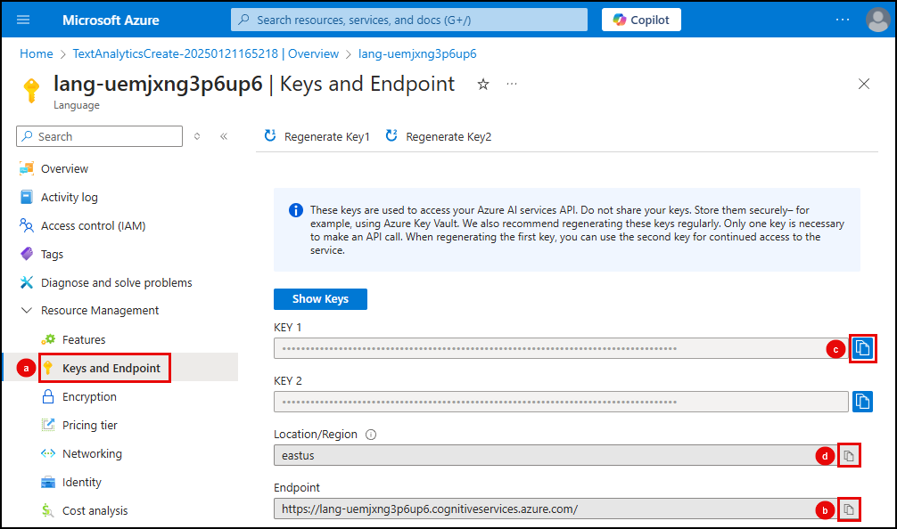
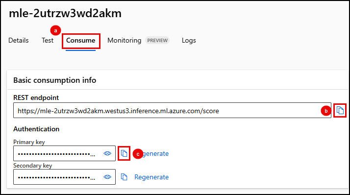

3.2 Configure the Azure AI extension¶
The azure_ai extension lets you directly integrate the Azure OpenAI, Azure AI Language, and Azure ML services into your database. To start using the extension's capabilities, you must first configure its connection to your Azure AI and ML services, providing each service's endpoint and subscription key.
Execute SQL in pgAdmin to configure the extension¶
You will use pgAdmin to configure the azure_ai extension by executing SQL commands against your database.
-
On your local machine, return to the open instance of pgAdmin (or open it if you closed it after the setup tasks) and ensure it is connected to your PostgreSQL database.
-
In the pgAdmin Object Explorer, expand databases under your PostgreSQL server.
-
Right-click the contracts database and select Query Tool from the context menu.
Select each tab below and execute SQL statements provided to connect to each Azure AI service.
The Azure AI extension includes the azure_openai schema, which allows you to integrate the creation of vector representations of text values directly into your database by invoking Azure OpenAI embeddings. The vector embeddings can then be used in vector similarity searches.
-
In the new pgAdmin query window, paste the following SQL commands to configure the extension's connection to Azure OpenAI using the
set_setting()function. Do not run the commands yet, as you first need to retrieve the endpoint and API key for your Azure OpenAI resource.SQL 1 2
SELECT azure_ai.set_setting('azure_openai.endpoint', '<endpoint>'); SELECT azure_ai.set_setting('azure_openai.subscription_key', '<api-key>'); -
In a browser window, navigate to your Azure OpenAI service in the Azure portal.
-
On the Azure OpenAI service page:
-
Select the Keys and Endpoint menu item under Resource Management.
-
Copy the Endpoint value, paste it as the
<endpoint>value in the query to set theazure_openai.endpointvalue in your pgAdmin query window. -
Copy the KEY 1 value, paste it as the
<api-key>value in the query to set theazure_openai.subscription_keyvalue in your pgAdmin query window.

-
-
In pgAdmin, execute the updated SQL commands by selecting the Execute script button.

-
The
azure_aiextension also provides theget_setting()function, allowing users with appropriate permissions to view the values stored in each schema'sendpointandkeysettings. Run the following queries to view the Azure OpenAI endpoint and key values stored in the database.1select azure_ai.get_setting('azure_openai.endpoint');1select azure_ai.get_setting('azure_openai.subscription_key');
The Azure AI services integrations included in the azure_cognitive schema of the azure_ai extension provide a rich set of AI Language features accessible directly from the database.
-
In the pgAdmin query window, overwrite the previous commands by pasting the following SQL commands to configure the extension's connection to your Language service. Do not run the commands yet, as you first need to retrieve your service's endpoint and API key.
SQL 1 2
SELECT azure_ai.set_setting('azure_cognitive.endpoint', '<endpoint>'); SELECT azure_ai.set_setting('azure_cognitive.subscription_key', '<api-key>'); -
In a browser window, navigate to your Language service in the Azure portal.
-
On the Language service page:
-
Select the Keys and Endpoint menu item under Resource Management.
-
Copy the Endpoint value, paste it as the
<endpoint>value in the query to set theazure_cognitive.endpointvalue in your pgAdmin query window. -
Copy the KEY 1 value, paste it as the
<api-key>value in the query to set theazure_cognitive.subscription_keyvalue in your pgAdmin query window.

-
-
In pgAdmin, execute the updated SQL commands by selecting the Execute script button.
The Azure AI extension allows you to invoke any machine learning models deployed on Azure Machine Learning (ML) online endpoints from within SQL. These models can be from the Azure ML catalog or custom models that have been trained and deployed.
-
In the pgAdmin query window, overwrite the previous commands by pasting the following SQL commands to configure the extension's connection to Azure ML. Do not run the commands yet, as you first need to retrieve the endpoint and key for the model deployed on Azure ML.
SQL 1 2
SELECT azure_ai.set_setting('azure_ml.scoring_endpoint','<endpoint>'); SELECT azure_ai.set_setting('azure_ml.endpoint_key', '<api-key>'); -
In a browser window, navigate to your Azure ML workspace in the Azure portal.
-
From the Azure ML workspace page, select the Launch studio button to open Azure Machine Learning Studio in a new browser window.

-
Sign into Machine Learning Studio if prompted.
-
In Machine Learning Studio, select Endpoints under Assets in the left-hand resource menu, then select the endpoint for your
bge-v2-m3-reranker model:
-
On your endpoint page:
-
Select the Consume tab.
- Copy the REST endpoint value, paste it as the
<endpoint>value in the query to set theazure_ml.scoring_endpointvalue in your pgAdmin query window. -
Copy the Primary key value, paste it as the
<api-key>value in the query to set theazure_ml.endpoint_keyvalue in your pgAdmin query window.
-
In pgAdmin, execute the updated SQL commands by selecting the Execute script button.
Be sure to run the scripts to add the endpoints and keys for all three services (Azure OpenAI, Language Service, and Azure Machine Learning) in the database.